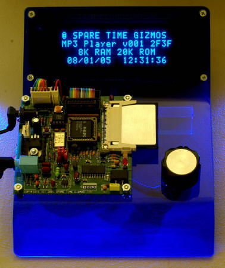

MP3 Player
MP3 Player


|
|
Read all about the MP3 Player Project in the October and November 2005 issues of Nuts & Volts Magazine!!
 In real life it's a little harder than that, but this project will allow you to put together your own MP3 player platform. The software is open source and the hardware is intentionally left generic to allow you to customize it for your needs. This MP3 player was the subject of a two part feature article in the October and November 2005 issues of Nuts & Volts Magazine and, if you don't already have it, we recommend that you visit the nice people at Nuts & Volts and order a reprint of those issues. On the whole I'm pretty happy with Nuts and Volts, but I have to say that their postage stamp sized rendition of this photo was a big disappointment. Photographer Dan and I worked hours on this image! Click on the image to the left for a bigger version... And as if that wasn't enough, N&V left out the dedication too!
Here's what it should have said - Last but never least, thanks to my wife
Debee who ported the firmware from the very expensive Keil C51 compiler to the
free (!!) SDCC compiler, all the while enduring endless repetitions of Sheryl
Crow as I debugged the hardware. SupportThere is a Spare Time Gizmos group on Yahoo! specifically for discussing this project and all other Gizmos. Anybody interested is welcome to join, and if you do elect to build the MP3 player we strongly suggest you do. Any updates, errors, offers, or other information concerning this project will be announced there!
ErrataThere are currently no known errors in the Nuts & Volts article, but if any are found we'll describe them here. HintsIf we have any tips or hints to help you build your MP3 Player, you'll find them here! FirmwareIs it just me, or are projects that involve music the most fun? Picture The MP3 Player firmware source code is Copyright 2005 by Spare Time Gizmos and is released under the terms of the GNU General Public License. You're welcome to download it, modify it, and re-distribute it within the terms of that license. If you do something cool with it, let us know - we'd like to include it in our sources! But before you click that DOWNLOAD button, listen to a couple of things, please. First, if you're looking for the source to an MP3 decoder algorithm that runs on an 8 bit micro, forget it. There's no such thing and you haven't been paying attention either - all the MP3 decoding in this project is done by hardware in the form of the STA013 chip. The only thing this firmware knows about the insides of an MP3 file is how to find the ID3 tag, and that isn't very exciting. Second, if you only want to program your player and don't plan to modify the source code, then download the Binaries archive. The hex files in this image were built by the Keil C51 compiler, which generates much smaller, faster and more responsive code than the free SDCC compiler. I guess there has to be some reason why C51 costs $3,000, after all. Downloads
PartsA few words on locating some of the harder to find parts:
The display interface in the MP3 Player is fairly generic and there are a great number of surplus LCD and VFD displays that could be made to work with minor firmware and/or hardware (e.g. special cables) hacks. If you get one to work, or if you're interested in trying, please join the Yahoo Spare Time Gizmos Group and tell us about it! PurchasePlease read the Spare Time Gizmos store policies before ordering. Shipping charges shown are for the US only - international customers please inquire before ordering. Sales tax must be charged on all shipments to California addresses. 21-Oct-2005 - The PC boards are here (!!), and we should have all outstanding orders shipped by the end of next week.
If you do not wish to pay by PayPal, please contact us with your needs and we'll be happy to accept payment by personal check or money order. Free counters provided by Andale. |
Visit these Spare Time Gizmos
|


{kind=link}
{kind=link}